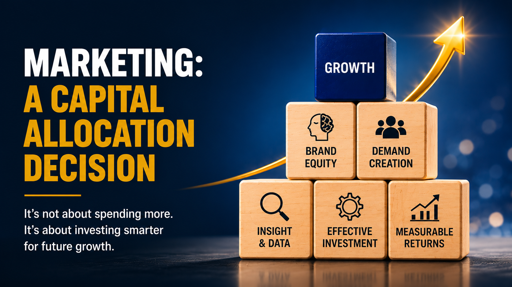
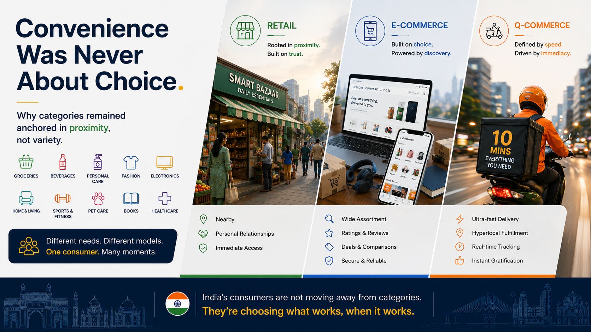
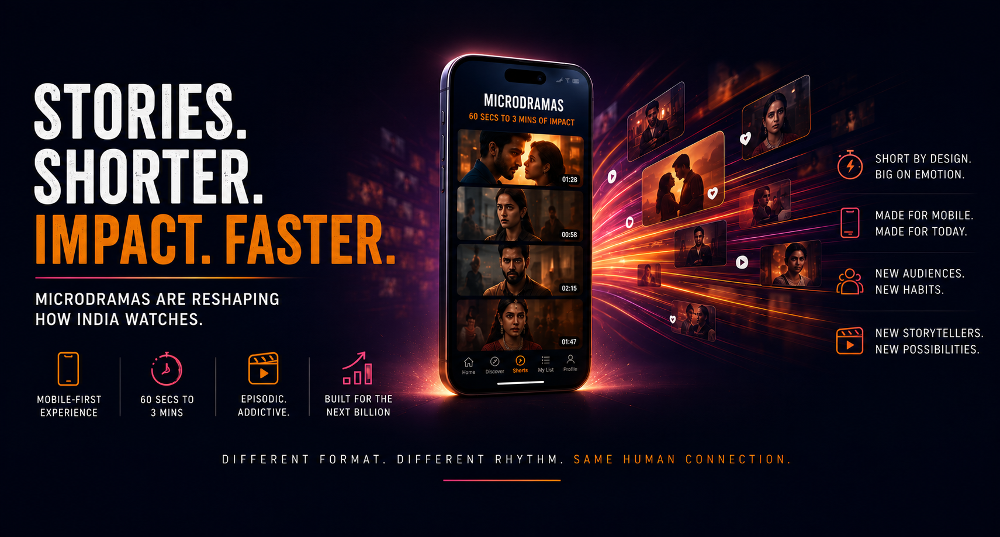
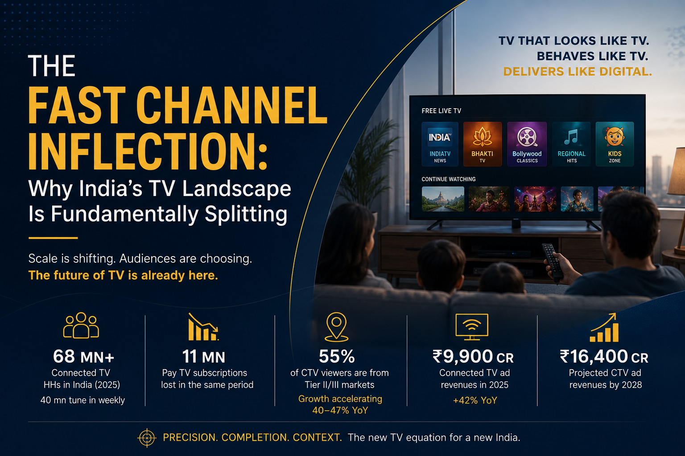
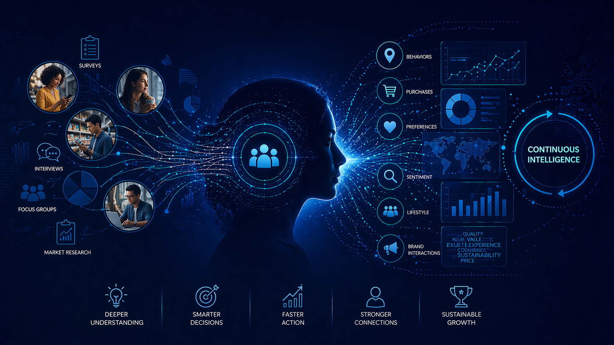
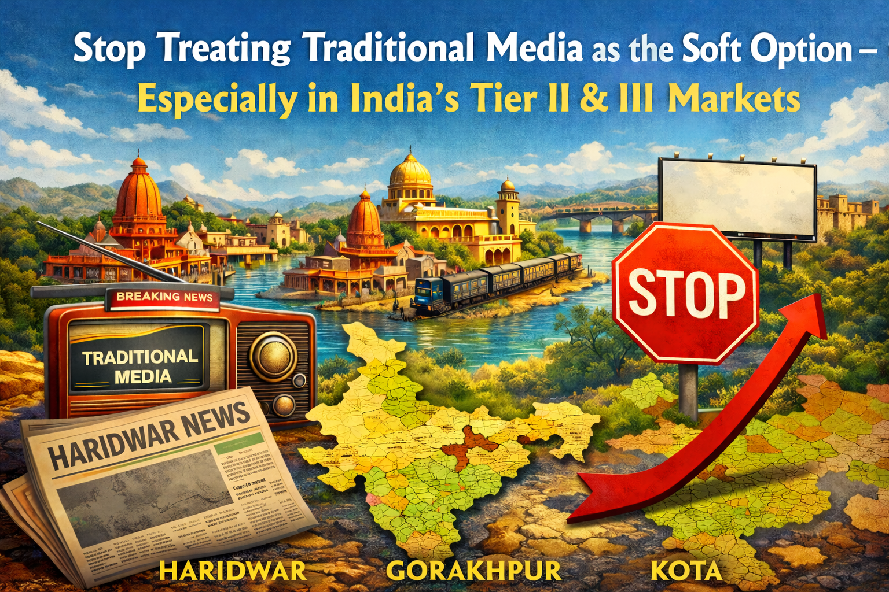
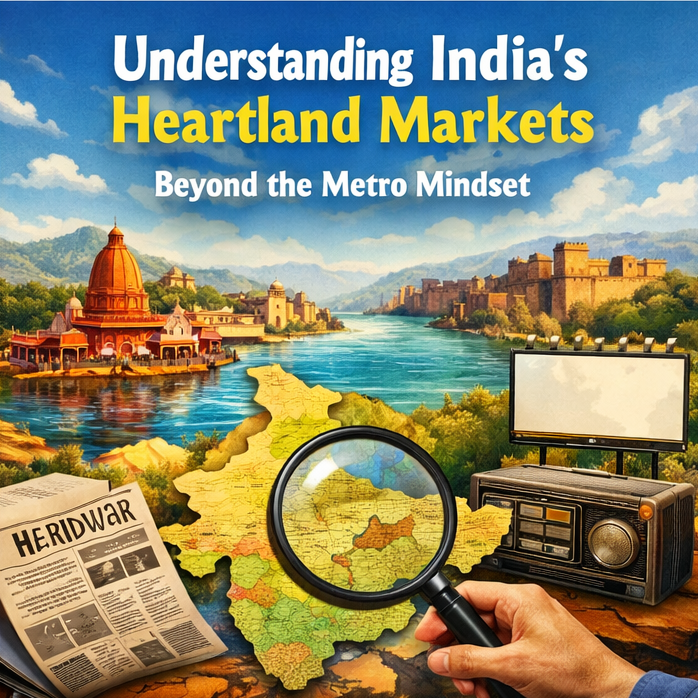

PERSPECTIVES
Thinking on marketing, media, data and growth.
Articles

Channel Wars: Over Occasion Have Begun

Microdramas: India T20 Moment Storytelling

Fast Channel Inflection: Why India's TV Landscape
Control & Curation: Evolution of Luxury Engagement

Consumer Insights: From Periodic Research to Continuous

Stop Treating Traditional Media as Soft Option

One Budget, Two Indias: Media Planning Challenge
Featured In
Festive AdEx 2026: Brands chase the purchases consumers postponed
BestMediaInfo
17th July 2026